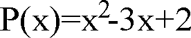
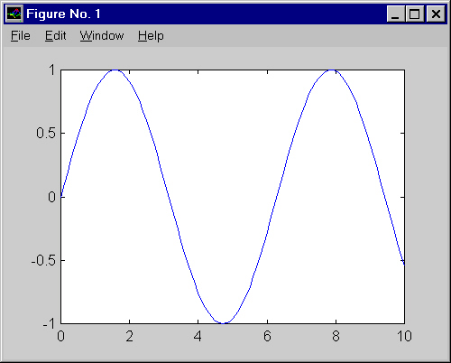
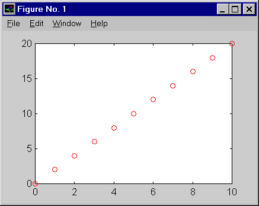
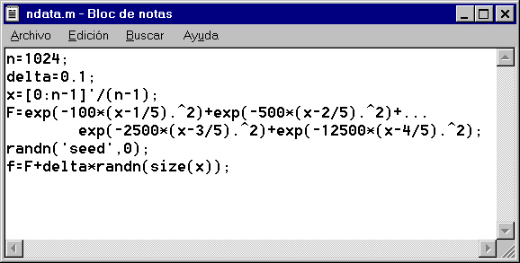

» x=2+3
x =
» 2+3
ans =
» x
x =
| ^ | exponenciación |
| * | multiplicación |
| / | división |
| + | suma |
| - | resta |
El orden en que se realizan las operaciones de una línea es el siguiente: primero, la exponenciación; luego, las multiplicaciones y divisiones; y finalmente, las sumas y las restas. Si se quiere forzar un determinado orden, se deben utilizar paréntesis, que se evalúan siempre al principio. Por ejemplo, para hallar dos entre tres,
» 2/2+1
ans =
» 2/(2+1)
ans =
Dos observaciones. El punto decimal es . (no una coma). Y en Matlab, las mayúsculas y las minúsculas son distintas. Es decir, X es una variable diferente de x.
En Matlab están también definidas algunas funciones elementales. Las funciones, en Matlab, se escriben introduciendo el argumento entre paréntesis a continuación del nombre de la función, sin dejar espacios. Por ejemplo:
» y=exp(0)
y =
|
|
|
|
|
|
|
|
|
|
|
|
|
|
|
|
|
|
|
|
|
|
|
|
|
|
|
|
|
|
Para obtener las funciones trigonométricas inversas, basta añadir una a delante del nombre. Y para las funciones hiperbólicas, una h al final. Por ejemplo, atanh(x) es el arcotangente hiperbólico de x:
» z=atanh(2)
z =
Este documento es tan sólo una introducción -muy resumida- del lenguaje y del manejo de Matlab. Antes de seguir, es conveniente indicar cómo puede obtenerse más información sobre cualquier detalle referente a Matlab. Por supuesto, siempre se pueden consultar los manuales: hay un ejemplar en las salas del C.T.I. y otro en la biblioteca, que puede obtenerse en préstamo por un día.
Además, desde dentro de Matlab pueden obtenerse explicaciones sobre un tema particular. Hay varios métodos.
» help round
ROUND Round towards nearest integer.
ROUND(X) rounds the elements of X to the nearest integers.
See also FLOOR, CEIL, FIX.
Si se escribe sólo help, se obtiene un índice de temas. También puede obtenerse información sobre uno de los temas de esa lista: así, help elfun proporciona información sobre las funciones matemáticas elementales.
La información que se obtiene es mucho más completa que en los otros dos casos, lo cual puede resultar inconveniente si uno desea simplemente, por poner un caso, conocer la sintaxis de una función.
Una introducción a Matlab más rigurosa, extensa y comprensiva que este documento puede encontrarse en el epígrafe "Getting Started" del Help Desk.
» d2_f=(y2-2*y1+y3)/deltax^2)
??? -2*y1+y3)/deltax^2)
en vez de volver a teclear todo, puede recuperarse
la instrucción pulsando la tecla "flecha hacia arriba",
desplazarse
hasta el error (falta un paréntesis) con la flecha hacia a la
izquierda, y arreglarlo:
» d2_f=(y2-2*y1+y3)/(deltax^2)
» y=sqrt(4);
El resultado no aparece, pero sin embargo el cálculo se ha realizado:
» y
y =
» who
Your variables are:
Fy f indice n_punt t_m
delta_f f_max manchas t y
|
|
(directorio de trabajo actual) |
|
|
|
|
|
|
» cd a:
» save toto.dat y -ascii
se cambia el directorio de trabajo a a:\ y se guarda allí el contenido de la variable y en el fichero toto.dat con formato texto (por eso se pone -ascii).
Un vector se define introduciendo los componentes, separados por espacios o por comas, entre corchetes:
» v=[sqrt(3) 0 -2]
v =
» w=[1;0;1/3]
w =
0
0.3333
» w'
ans =
» v*w
ans =
ans =
» x=4:2:10
x =
Para introducir matrices, se separa cada fila con un punto y coma:
» M = [1 2 3 ;4 5 6 ;7 8 9]
M =
4 5 6
7 8 9
» M(3,1)
ans =
» v1=M(:,2)
v1 =
5
8
Con las matrices también funcionan las operaciones matemáticas elementales. Así
» M^2
ans =
66 81 96
102 126 150
» M.^2
ans =
16 25 36
49 64 81
|
|
|
|
|
|
|
|
|
|
|
|
(Para más información: help elmat)
Sea

Este polinomio se representa por un vector p
» p=[1 -3 +2]
p =
» roots(p)
ans =
1
» polyval(p,0)
ans =
Las posibilidades de Matlab son muy grandes. Se indica a continuación cómo realizar gráficos sencillos. Para más información, o para conocer la versatilidad de Matlab: capítulo Handle Graphics Object del Help Desk, el manual Using MATLAB Graphics o la ayuda en línea help graph2d.
Veamos cómo se puede representar la función seno entre 0 y 10. Para empezar creemos una variable x que vaya de cero a 10:
» x=0:0.1:10;
y a continuación, calculemos sin(x) almacenando el resultado en la variable y:
» y=sin(x);
Para trazar el gráfico, se emplea la función plot:
» plot(x,y)
y se obtiene en otra ventana el gráfico:

Entre los muchos comandos que se pueden utilizar para modificar los gráficos, es muy útil el empleado para cambiar la escala de los ejes. La orden es
axis([x1 x2 y1 y2])
donde x1, x2 son los límites inferior y superior del eje x, e y1 e y2 los del eje y.
Para representar unos datos con símbolos de colores, se añade al comando plot, entre apóstrofes, la especificación. Vamos a crear una variable con dos filas que contenga los números del 1 al 10 en la primera fila, y el doble de esos números en la segunda, y dibujarlos con puntos rojos:
» x(1,:)=0:10;
» x(2,:)=2*x(1,:);
» x
x =
0 2 4 6 8 10 12 14 16 18 20

(para ver las especificaciones posibles, teclear help plot. Por ejemplo, 'ro' establece un gráfico de color rojo: r y de puntos: o.) Si no se indica nada, el gráfico se traza con una línea azul.
Otras funciones muy útiles: grid, que traza una cuadrícula, xlabel('títulox')e ylabel('títuloy'), que sirven para poner un título en los ejes.
Para imprimir una figura, basta seleccionar print del menú de la figura.
Realizar un programa en Matlab es fácil. Basta abrir un editor de texto (como el Bloc de Notas de Windows) y escribir los comandos uno a continuación de otro. Luego ese fichero de texto debe guardarse con la extensión .m, y a eso se le llama un script:

Una vez guardado el fichero (en el ejemplo, ndata.m) en el directorio actual, desde la línea de comandos de Matlab basta escribir ndata para que se ejecute el programa.
A partir de aquí, se abren las posibilidades de la programación con un lenguaje sencillo. Puede verse una página Web de introducción a la programación aquí.
Hasta ahora, las operaciones que se han mostrado se han realizado con números. El toolbox de cálculo simbólico permite realizar cálculos abstractos:
» diff('sin(x)')
ans =
A continuación se da una tabla con algunas
funciones de este toolbox, junto con un ejemplo de cada una:
|
|
|
|
|
|
|
|
|
|
|
|
|
|
|
|
Evidentemente, las expresiones pueden ser todo lo complicadas que se quiera ...
» solve('x=cos(x)')
ans =
ans =
Se agradece cualquier
sugerencia sobre este documento. Puede enviarse un mensaje por correo
electrónico a